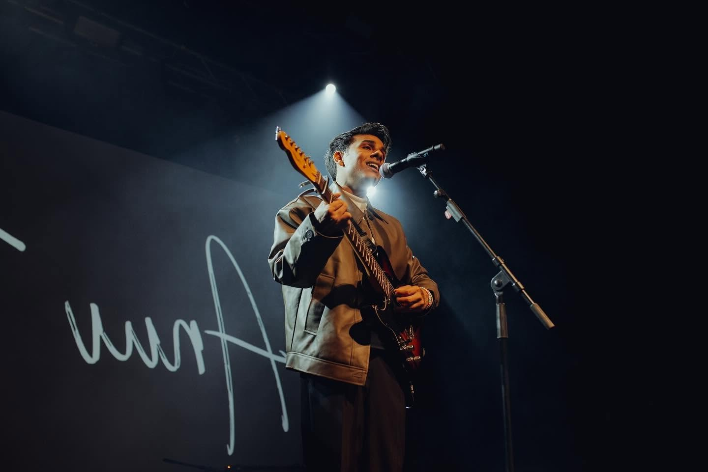

About Anuv jain
Anuv Jain (born March 11, 1995, in Ludhiana, Punjab) is a highly popular Indian singer, songwriter, and composer. Known for his baritone voice and intimate, simple-chorded acoustic songs about love and heartbreak, he is one of the most streamed indie artists in the country.
Achievements
- He has accumulated over 1.5 billion streams globally across platforms like Spotify and YouTube
- "Husn" (2023): Garnered over 500 million streams, reaching #1 on the Spotify Viral charts in multiple countries.
- "Jo Tum Mere Ho" (2024): Secured his second consecutive #1 hit in India, following the monumental online traction of breakout songs like "Baarishein" and "Alag Aasmaan".
- Independent Ownership: One of his most significant personal achievements is owning all the rights to the music he has produced and released over his career.